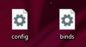
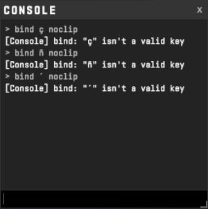
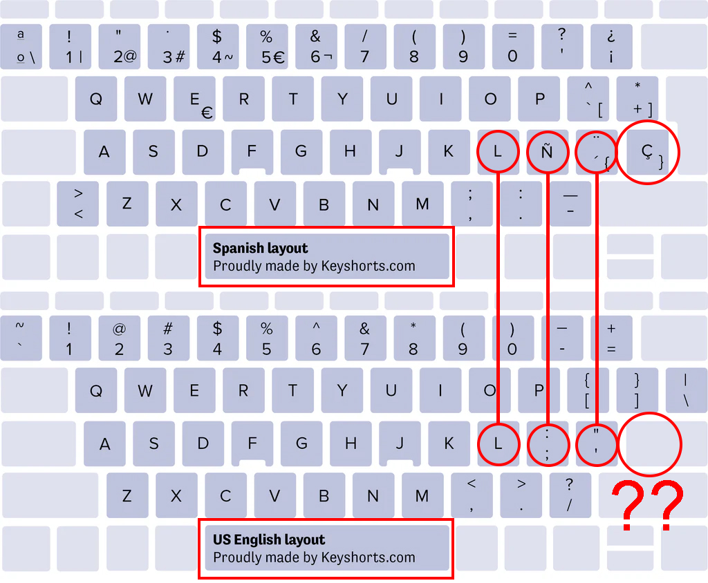

This application let's you save your CS2 settings into .cfg files,
including popular settings and binds that aren't available in the game's menu but are often used by pros.
It was designed using Unity and every command from the game was researched and implemented, so you can easily create your own custom configs.

The Problem with Custom Keybinds
The biggest issue when creating custom keybinds in CS2 isn’t with the standard keybindings found in the game’s settings menu — those work fine regardless of your keyboard layout.
The problem appears when you try to bind actions that are only available via the console, such as noclip, toggle r_fullscreen_gamma [values] or any other advanced binds.
On non-US keyboard layouts (let's use Spanish or Portuguese as an example), some keys — like ç — simply aren’t recognized by the console. For example, running bind ç noclip
will result in an error because ç is not a valid key name according to CS2. 
You might think: “I’ll just find the US equivalent.” But here’s the catch: many of those keys don’t exist at all on the US ANSI layout, this is because the majority of countries uses ISO layout, and it has one more key. The ç key, for instance, doesn't have a direct counterpart, making it impossible to bind unless you guess the correct layout-dependent key name — which varies per system. 
This makes creating reliable custom configs a nightmare for anyone not using a US keyboard.
Additionally, the game uses keyboard layout-specific key names, which can cause issues when switching between different keyboard layouts.
Features & Benefits
Keyboard Layout Independent
One of the biggest advantages is that this app works with any keyboard physical and logical layout. Instead of using layout-specific key names, it uses
SDL scancodes, these codes represent the physical key of every keyboard, and they are used in Counter-Strike 2.
This ensures your config works the same on QWERTY, AZERTY, DVORAK, and others — no more broken keybinds.
You can even test your keyboard using the application, just select ISO/ANSI, press a key, and it will turn blue!
Familiar layout
The app's interface replicates the in-game settings menu, making it intuitive for players.
You can easily navigate through the different sections and categories, just like in CS2.
Automatic and organized Config Generation
This app automates the creation of `.cfg` files for CS2, making it easy to save, export, and reuse your settings. Each command/bind is placed inside a category. Perfect for sharing configs or switching between PCs.
Includes Hidden Binds & Settings
It includes advanced commands and binds commonly used by professional players — but not available in the in-game menu — such as:
Quick-buy binds
Sound and HUD toggle binds
Bot commands and toggle binds
say binds
sv_cheats related commands to practice
Automatic updates
The application fetches all settings and bindable commands from remote JSON files.
These are loaded and instantiated dynamically, which means new features or game updates can be integrated without requiring the user to download a new version.
Updates only become necessary in case of major structural changes or critical bug fixes.